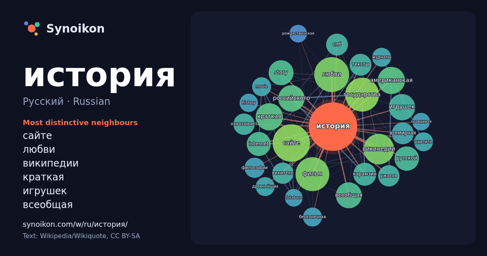

Русский · Russian · popular word
история
“history” · The words found around it in 1289 instances from Russian Wikipedia, Wikiquote.

Most distinctive neighbours
- сайте 44×
- любви 40×
- википедии 39×
- краткая 31×
- игрушек 29×
- всеобщая 28×
- story 26×
- государства 25×
- internet 24×
- американская 24×
- карамзин 23×
- российского 21×
- всемирная 20×
- викитеке 20×
- спб 19×
- ужасов 18×
- охватывает 18×
- тексты 18×
- бесконечная 16×
- movie 16×
× = how many times more often than in general Russian Wikipedia text.
Most frequent neighbours
- города 68
- сайте 58
- любви 51
- государства 48
- фильм 48
- россии 47
- википедии 39
- американская 31
- краткая 31
- игрушек 29
- российского 29
- всеобщая 28
- story 26
- русской 25
- internet 24
- карамзин 22
- всемирная 20
- спб 20
- тексты 20
- викитеке 19
In context
- Бенедетто Кроче, «вся история — современная история». Англо-американские историки писали о конфликте между историей как искусством и историей как наукой (Science) Wikipedia snippets · История
- «История О» (фр. Histoire d'O) — эротический роман французской писательницы Доминик Ори на садомазохистскую тему. Впервые был издан в 1954 году под псевдони … Wikipedia snippets · История О
- «История о нас» (англ. The Story of Us) — комедийная мелодрама 1999 года режиссёра Роба Райнера с участием Брюса Уиллиса и Мишель Пфайффер. Бен Джордан Wikipedia snippets · История о нас
- хитом в России. В 1998 году вышел второй альбом «Моя история», песни «Южная ночь» и «Моя история» вошли в сборник «Союз 22». Песни «Лунные ночи» и «Туда-сюда» Wikipedia snippets · Моя история
- «Уборная история — любовная история» — российский короткометражный мультипликационный фильм 2007 года, поставленный режиссёром Константином Бронзитом. Wikipedia snippets · Уборная история — любовная история
- «Монстр: История Эда Гина» (англ. Monster: The Ed Gein Story) — третий сезон американского биографического криминального сериала-антологии «Монстр», созданного Wikipedia snippets · Монстр: История Эда Гина
- «Монстр: История Лиззи Борден» (англ. Monster: The Lizzie Borden Story) — четвёртый сезон американского сериала-антологии «Монстр», выпущенный на платформе Wikipedia snippets · Монстр: История Лиззи Борден
- экспансия США Заморская экспансия США Хронология истории США Оксфордская история Соединённых Штатов Америки История почты США Комментарии Архаикой называют и Wikipedia snippets · История США
More Russian words
- бог
- власть
- вода
- деньги
- жизнь
- здоровье
- золото
- искусство
- истина
- климат
- кошка
- мост
- наука
- пища
- поезд
- природа
- работа
- семья
- сердце
- смерть
- собака
- язык
Precomputed on 2026-10-09 with default settings (±5 words, medium corpus). The interactive map can refresh it with live data.